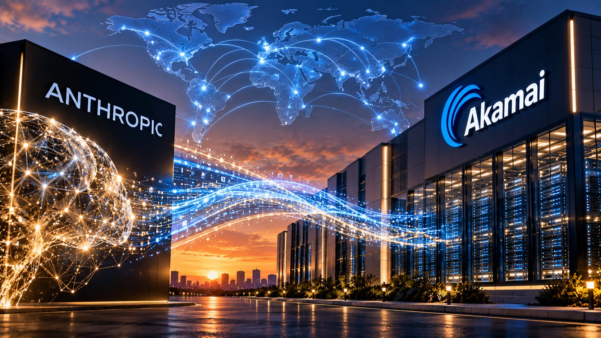

In Plain English
Anthropic, the company behind the Claude AI models, has agreed to pay Akamai about $11.6 billion over seven years for dedicated computing capacity, with an option to grow the relationship to roughly $20 billion. As part of the deal, Akamai gave Anthropic the right to buy up to about 5 percent of the company.
That last detail is what makes this more than a large cloud contract. The customer can become a shareholder in its supplier. The supplier is spending billions on hardware built around one customer's needs. Each now has a financial stake in the other.
For enterprises, the point is practical. The AI services companies buy increasingly run on infrastructure arrangements they never see and never signed. Those arrangements shape availability, pricing, and where data is processed. Buyers should start asking about them.
What was actually agreed
Akamai's securities filing says more than the headlines. The two companies signed a master services agreement on May 5, 2026, under which Akamai provides Anthropic dedicated cloud capacity and managed support. On September 18, they added two new project plans under that agreement. Anthropic committed to pay about $11.6 billion across the two plans, each running seven years from its service start date, subject to Akamai meeting delivery and service availability requirements. The deal was announced September 24.
In other words, this is an expansion of a relationship that began in May, not a new one.
The equity piece is a warrant for non-voting preferred stock convertible into about 7.74 million Akamai common shares at $111.33 each, roughly $860 million if fully exercised. It vests in four tranches. The first, 40 percent of the warrant, vests on Anthropic's first payment under the new plan. The remaining three vest with each additional $3 billion Anthropic commits. The shares carry no vote.
The roughly $20 billion figure is not committed money. It is the $11.6 billion plus up to $9 billion in additional purchases at terms both sides would still have to agree.
To deliver, Akamai expects about $5.5 billion in capital spending. It raised its 2026 capital budget by about $1.7 billion to buy critical components in advance, including memory, and authorized its manufacturing partner Jabil to purchase about $1.7 billion of memory components on its behalf. A day earlier, it signed a seven-year hardware and services agreement with Lenovo. Akamai's chief financial officer told analysts that revenue from the contract should begin in the second half of 2027.
The capacity is being built now. The revenue arrives later. That gap is where execution risk lives.
Why CPUs matter here
Most AI infrastructure coverage is about GPUs and custom accelerators, the chips that train and run models. This contract is explicitly for CPU workloads, the general-purpose processors that run most of the world's software.
Neither company has said which workloads. The available information suggests a reasonable interpretation: as AI systems move from answering questions to completing tasks, a growing share of the work happens around the model. Running code, calling tools, retrieving data, and coordinating multi-step jobs are general-purpose computing. As Bloomberg noted, CPUs are seeing renewed demand in data centers because they support AI services.
For anyone planning AI capacity, that is the signal. AI infrastructure is no longer only a GPU question.
Concentration, but not where most people will look
The instinct is to read this as AI infrastructure concentrating. From Anthropic's side, the opposite is true. It has spread its compute across a long list of providers, including Amazon Web Services, Google, Microsoft, CoreWeave, Fluidstack, Nscale, Lambda, AMD, and SpaceX. The Information tallied roughly $517 billion in compute agreements over eleven months. Akamai is one supplier among many.
From Akamai's side, the picture is different. Its cloud infrastructure services business generated about $94.6 million in revenue in the first quarter of 2026. Akamai's CFO expects this contract alone to reach an annualized run rate of about $1.7 billion by the end of 2028. By NVG's calculation, that is roughly four times Akamai's entire cloud infrastructure business at its first-quarter pace, and about 40 percent of the whole company's revenue at that pace.
The termination terms show where the leverage sits. Anthropic may terminate a project plan after a material outage, subject to conditions, and may end the master agreement if Akamai undergoes a change of control in favor of a direct competitor of Anthropic. Akamai's termination rights center on uncured breach.
That is not a criticism of either company. It is how large, customer-specific infrastructure deals work. But it illustrates a pattern enterprises should understand. Concentration risk in AI infrastructure is two-sided. Frontier AI labs are diversifying across suppliers, while some suppliers are concentrating around a few very large customers. Enterprise buyers sit downstream of both.
Market reaction was immediate. Akamai shares rose about 20 percent in after-hours trading. Emarketer analyst Jacob Bourne described the potential stake to Reuters as "a vote of confidence in the durability of AI-driven cloud demand."
What this means for enterprise buyers
Consider an enterprise architect evaluating where to run AI workloads. A few years ago, the reasonable assumption was that AWS, Azure, Google Cloud, and specialist providers were broadly interchangeable pools of capacity, and that price and features would decide placement.
That assumption is weakening. When an enterprise calls an AI model, the capacity behind it may depend on contracts among a dozen or more infrastructure companies, each with its own build schedule, component supply, and failure modes. None of that appears in the enterprise's own contract.
The questions worth asking now:
- Where is our data actually processed? Ask AI providers for their subprocessor lists and the notice they give before adding one. In the EU, GDPR Article 28 already requires processors to obtain authorization for subprocessors and inform customers of changes. Use it.
- What happens when a supplier misses a delivery date? Capacity scheduled for 2027 and 2028 is a plan. Akamai's own forward-looking statements cite supply chain constraints and performance delays as risks.
- How portable are we? Design so that a model, provider, or region can be swapped without rewriting the application.
- Does our pricing reflect someone else's fixed commitments? Consumption-based pricing increasingly sits on top of seven and ten year capacity obligations. Those costs have to be recovered somewhere.
- Are our vendors concentrated on one customer? When a supplier's revenue depends heavily on a single account, its priorities follow that account.
The NVG view
The cloud market was built on the promise that infrastructure is a utility: abstract, interchangeable, and somebody else's problem. AI is reversing that. Capacity is being reserved years in advance, financed with equity, and designed around specific customers.
That does not make AI services less reliable. It makes their dependencies less visible.
The useful question for technology leaders is no longer which cloud is cheapest. It is which dependencies they are inheriting through their AI providers, and whether they would know if one of them changed.
Align. Modernize. Transform.
Sources & Further Reading
- Akamai Technologies, Form 8-K, filed September 24, 2026 (U.S. Securities and Exchange Commission).
- Akamai Technologies, "Akamai Announces $11.6 Billion Multi-year Agreement with Anthropic to Support Growing Demand," press release, Exhibit 99.1, September 24, 2026.
- Akamai Technologies, Form 10-Q for the quarter ended March 31, 2026.
- Reuters, "Anthropic signs $11.6 billion cloud deal with Akamai, gets warrant for up to 5% stake," September 24, 2026.
- Bloomberg, "Anthropic Strikes $12 Billion Deal With Akamai for AI Computing," September 24, 2026.
- Yahoo Finance, "Akamai Lands Record $11.6B Anthropic AI Cloud Deal, Eyes $20B Potential," September 24, 2026 (conference call remarks).
- SiliconANGLE, "Akamai shares jump more than 20% on $11.6B Anthropic computing deal," September 24, 2026.
- DCD, "Anthropic signed $517bn in compute agreements in past 11 months," September 7, 2026, citing The Information.
- Anthropic, "Anthropic and Amazon expand compute collaboration."
- Regulation (EU) 2016/679, General Data Protection Regulation, Article 28.
Information current as of September 24, 2026. Deal terms are drawn from Akamai's Form 8-K and press release dated September 24, 2026. Revenue timing and run-rate figures are Akamai management statements on its September 24 conference call as reported by the press. The additional $9 billion is an option, not a commitment. NVG calculations use figures reported in Akamai's public filings. Statements about potential effects on enterprises and vendors are forward-looking analysis, not predictions of outcome.
Disclosure: This article is published by North Velocity Group LLC (NVG) for informational and analytical purposes. It reflects NVG's interpretation of publicly available information and does not constitute legal, financial, investment, regulatory, procurement or other professional advice. NVG has no affiliation with, and no financial interest in, any company or organization named in this article. This article was researched and drafted with assistance from Claude, an AI model developed by Anthropic, a party to the agreement discussed; all facts were verified against the sources listed. All company and product names are the trademarks of their respective owners and are used here for identification and commentary only. Header image is AI-generated and does not depict actual Anthropic or Akamai facilities.